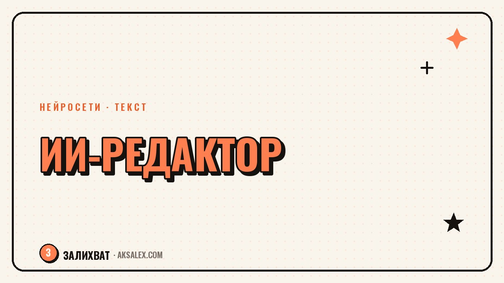

ИИ-редактор текста: как вычитать пост перед публикацией

Перед публикацией текст обычно проверяют бегло: перечитал разок, поправил очевидные опечатки и отправил. Нейросеть умеет находить то, что глаз уже не видит на своём тексте - повторы, канцелярит, слишком длинные предложения. Разберём, как встроить такую проверку в привычку и не превратить живой пост в стерильный.
Зачем вообще нужна ИИ-вычитка
Когда пишешь сам, глаз замыливается уже через пару абзацев. Ты помнишь, что хотел сказать, поэтому не замечаешь, что фраза получилась двусмысленной или предложение растянулось на три строки.
Нейросеть читает текст без контекста в голове автора, поэтому замечает ровно то, что там написано, а не то, что подразумевалось. Это делает её удобным вторым читателем перед публикацией.
- Находит повторы слов и однотипные конструкции
- Указывает на слишком длинные предложения
- Ловит канцелярит и штампы
- Проверяет логику переходов между абзацами
Что нейросеть находит лучше человека
У человека уходит время на построчный разбор, а нейросеть за секунды выделит все повторяющиеся слова в абзаце или покажет, где предложение перегружено вводными конструкциями.
Три вещи, которые стоит проверять каждый раз
- Одно и то же слово в соседних предложениях
- Длинные предложения с тремя и более оборотами
- Канцелярские фразы вроде 'осуществить процесс'
| Что проверяешь | Как формулировать запрос |
|---|---|
| Повторы | Найди повторяющиеся слова в этом тексте |
| Длина фраз | Покажи предложения длиннее двадцати слов |
| Канцелярит | Найди канцелярские и штампованные обороты |
| Логика | Есть ли разрывы в переходах между абзацами |
Что нейросеть портит, если довериться ей полностью
Если попросить нейросеть 'сделать текст лучше' целиком, она часто сглаживает интонацию: убирает разговорные словечки, выравнивает ритм предложений, добавляет обороты, которых у тебя никогда не было в речи.
Редактура должна убирать лишнее, а не переписывать голос автора заново.
Поэтому держи одно правило: нейросеть подсвечивает проблемные места, а решение, как их исправить, остаётся за тобой. Ты либо принимаешь правку, либо переписываешь фразу своими словами.
Как правильно строить запрос для вычитки
Не проси 'исправь текст' - в ответ получишь готовый рерайт, который звучит не как ты. Вместо этого проси найти конкретные проблемы: повторы, длинные предложения, лишние вводные слова.
- Разбей текст на смысловые куски перед проверкой
- Проси список замечаний, а не готовый переписанный текст
- Уточни, что стиль должен остаться разговорным
- Сверяй каждую правку с тем, как бы сказал ты сам
Такой подход занимает чуть больше времени, чем 'исправь всё сразу', зато текст после правки остаётся твоим, а не усреднённым нейросетевым вариантом.
Рабочий порядок проверки поста
Удобно проверять текст в три захода: сначала структура и логика, потом повторы и длина предложений, в конце - орфография и пунктуация. Так каждая проверка решает одну задачу и не путается с остальными.
Порядок действий
- Проверь, раскрыта ли мысль каждого абзаца
- Найди повторы и длинные предложения
- Проверь орфографию и знаки препинания
- Прочитай вслух финальную версию перед публикацией
Когда стоит обойтись без нейросети
Личные истории и эмоциональные посты лучше вычитывать самому или дать почитать живому человеку. Нейросеть хорошо ловит технические огрехи текста, но не всегда чувствует, где эмоция важнее гладкости фразы.
Если после правок текст стал звучать ровнее, но потерял живость - откати часть изменений. Пост, который читают ради пользы, и пост, который читают ради тебя, вычитывают немного по-разному.
Частые вопросы
Может ли нейросеть полностью заменить редактора?
Нет, она хорошо ловит технические ошибки вроде повторов и длинных предложений, но не заменяет чувство стиля и понимание, для кого пишется текст.
Как не потерять свой голос после ИИ-вычитки?
Проси список замечаний, а не готовый переписанный текст, и вноси правки вручную своими словами, а не копируй предложенный нейросетью вариант.
Нужно ли вычитывать нейросетью каждый пост?
Для коротких постов достаточно перечитать самому. ИИ-вычитка особенно полезна для длинных текстов, гайдов и статей, где легко пропустить повтор или разрыв в логике.
Какой запрос лучше не использовать для проверки текста?
Избегай общей формулировки 'сделай текст лучше' - она приводит к полному рерайту. Формулируй конкретные задачи: найти повторы, длинные предложения или канцелярит.
Портит ли ИИ-редактура эмоциональные посты?
Может, если довериться ей полностью. Личные истории лучше проверять частично - только на опечатки и явные огрехи, оставляя интонацию без изменений.
Раз тема оказалась полезной, вот что почитать следующим. Собери гайд с ИИ-помощником: от идеи до продажи, без дизайнера и редактора.
Читать статью →а не вручную